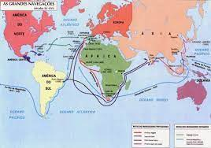

Era dos descobrimentos é a designação dada ao período da história que decorreu entre o século XV e o início do século XVII, durante o qual, inicialmente, portugueses, depois espanhóis e, posteriormente, alguns países europeus exploraram intensivamente o globo terrestre em busca de novas rotas de comércio.
O pioneirismo português começa em 1415 com a conquista de Ceuta, uma cidade que era um importante entreposto comercial. Vejamos a cronologia das navegações portuguesas:
A Espanha começa suas explorações navais em 1492 com a descoberta da América. A seguir, as principais datas das navegações espanholas:
Devido ao sucesso das expedições portuguesas e castelhanas, outros países tentaram conquistar novos territórios como Inglaterra, França e Holanda.
Navegações inglesas
Depois de algumas expedições de reconhecimento geográfico ao longo do litoral norte-americano, os ingleses só começaram a colonizar a América do Norte no final do século XVI. Igualmente, durante o reinado da rainha Isabel I, os navegantes ingleses eram estimulados a assaltar os galeões espanhóis que voltavam cheio de metais para a Espanha.
Navegações holandesas
Os holandeses chegaram à América no século XVII, e fundaram Nova Amsterdã (atual Nova York), porém seriam expulsos pelos ingleses. Neste mesmo século, invadiram e ocuparam Pernambuco e Bahia, conquistaram o atual Suriname e Curaçao. No Brasil, seriam rechaçados pelas tropas hispano-portuguesas, mas conseguiriam se estabelecer no Caribe, constituindo as Antilhas Holandesas. Na Ásia, os holandeses entraram em guerra com os portugueses para ocupar vários territórios que estes possuíam, como Malaca e o Timor.
Navegações francesas
Por sua parte, os franceses, jamais aceitaram a divisão da América, pelo Tratado de Tordesilhas, entre Espanha e Portugal. Por isso, disputaram territórios dominados pelos espanhóis. As investidas pelo Caribe e pelas costas norte-americanas resultaram na posse do Haiti, da Guiana Francesa, do Canadá e da Louisiana. No século XVI, um grupo de franceses tentaram se estabelecer no Rio de Janeiro, no episódio conhecido como França Antártica.Trouxeram, inclusive, alguns grupos de protestantes que eram perseguidos na França.
A baixo teremos uma imagem para mostrar as rotas que foram feitas durante esse período:
